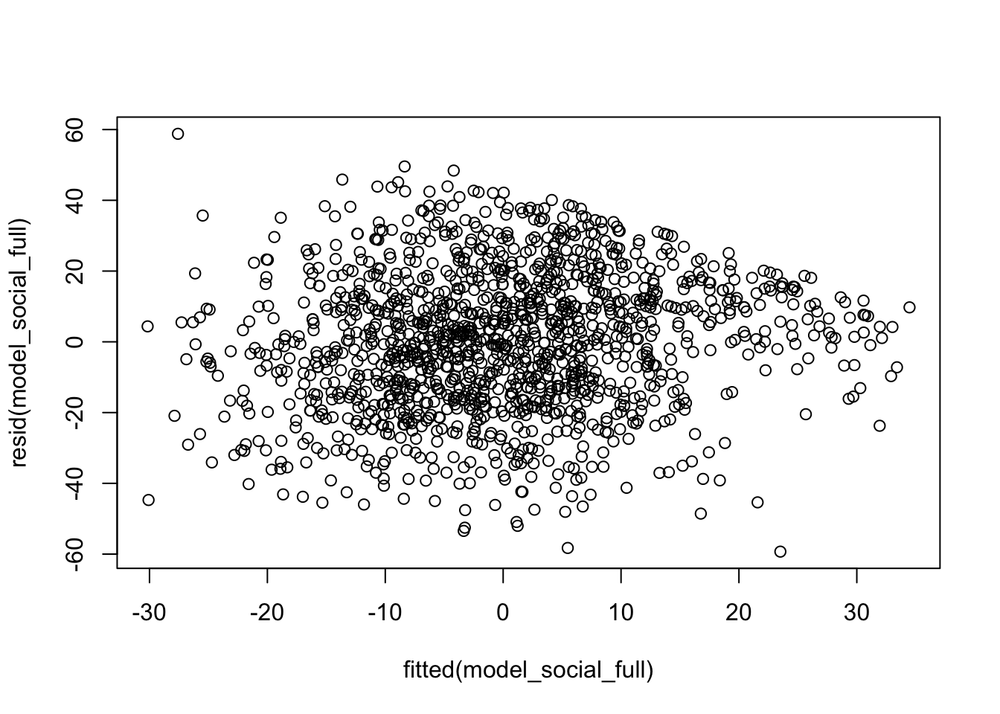
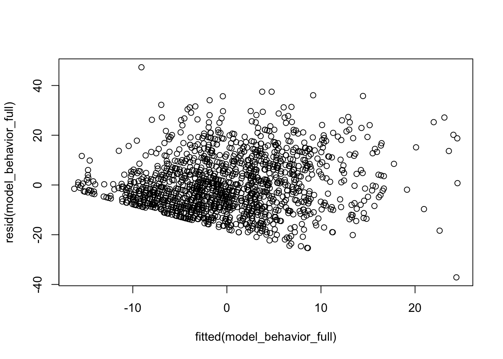

null_model_social <- lmer(ssisss_c ~ (1 | pkschlid), data = data_long)
null_model_behavior <- lmer(ssispb_c ~ (1 | pkschlid), data = data_long)Centering Predictors
To improve interpretability and avoid multicollinearity, all predictor variables are centered around their mean.
Building the Null Models
First I estimated an empty model with only a random intercept for pkschlid to examine the proportion of variance explained at the school level.
Computing the Intraclass Correlation Coefficient (ICC)
The ICC measures how much variance in social skills and problem behavior is due to differences between schools.
icc_social <- icc(null_model_social)
icc_behavior <- icc(null_model_behavior)
print(icc_social)# Intraclass Correlation Coefficient
Adjusted ICC: 0.208
Unadjusted ICC: 0.208print(icc_behavior)# Intraclass Correlation Coefficient
Adjusted ICC: 0.280
Unadjusted ICC: 0.280Stepwise Model Building
model_social_voc <- lmer(ssisss_c ~ ppvtst_c + (1 | pkschlid), data = data_long)
model_behavior_voc <- lmer(ssispb_c ~ ppvtst_c + (1 | pkschlid), data = data_long)
model_social_full <- lmer(ssisss_c ~ ppvtst_c + mlasm_c + (1 | pkschlid), data = data_long)
model_behavior_full <- lmer(ssispb_c ~ ppvtst_c + mlasm_c + (1 | pkschlid), data = data_long)
summary(model_social_voc)Linear mixed model fit by REML. t-tests use Satterthwaite's method [
lmerModLmerTest]
Formula: ssisss_c ~ ppvtst_c + (1 | pkschlid)
Data: data_long
REML criterion at convergence: 12493.2
Scaled residuals:
Min 1Q Median 3Q Max
-3.06122 -0.67381 0.02478 0.69968 2.69615
Random effects:
Groups Name Variance Std.Dev.
pkschlid (Intercept) 120.1 10.96
Residual 421.8 20.54
Number of obs: 1388, groups: pkschlid, 132
Fixed effects:
Estimate Std. Error df t value Pr(>|t|)
(Intercept) -1.17200 1.16120 123.13247 -1.009 0.315
ppvtst_c 0.28603 0.03855 1372.09074 7.420 2.04e-13 ***
---
Signif. codes: 0 '***' 0.001 '**' 0.01 '*' 0.05 '.' 0.1 ' ' 1
Correlation of Fixed Effects:
(Intr)
ppvtst_c 0.023 summary(model_behavior_voc)Linear mixed model fit by REML. t-tests use Satterthwaite's method [
lmerModLmerTest]
Formula: ssispb_c ~ ppvtst_c + (1 | pkschlid)
Data: data_long
REML criterion at convergence: 10909.6
Scaled residuals:
Min 1Q Median 3Q Max
-3.1604 -0.7043 -0.1587 0.5776 4.1024
Random effects:
Groups Name Variance Std.Dev.
pkschlid (Intercept) 51.93 7.206
Residual 131.67 11.475
Number of obs: 1388, groups: pkschlid, 132
Fixed effects:
Estimate Std. Error df t value Pr(>|t|)
(Intercept) 1.10107 0.73122 126.50617 1.506 0.135
ppvtst_c -0.08889 0.02168 1358.14168 -4.100 4.37e-05 ***
---
Signif. codes: 0 '***' 0.001 '**' 0.01 '*' 0.05 '.' 0.1 ' ' 1
Correlation of Fixed Effects:
(Intr)
ppvtst_c 0.022 Extracting and Interpreting Results
fixef_social <- fixef(model_social_full)
fixef_behavior <- fixef(model_behavior_full)
print(fixef_social)(Intercept) ppvtst_c mlasm_c
-1.20897692 0.09676041 1.56388028 print(fixef_behavior)(Intercept) ppvtst_c mlasm_c
1.11284984 -0.03892677 -0.41230580 Checking Homoscedasticity


Compute Final ICC and Effect Size
# Intraclass Correlation Coefficient
Adjusted ICC: 0.236
Unadjusted ICC: 0.221# Intraclass Correlation Coefficient
Adjusted ICC: 0.287
Unadjusted ICC: 0.283 R2m R2c
[1,] 0.06329894 0.2845134 R2m R2c
[1,] 0.01633917 0.2989862DiagrammeR::grViz(
"digraph G {
rankdir=LR;
node [shape = rectangle, style = filled, color = lightblue];
Vocabulary [label = 'Vocabulary'];
MathLanguage [label = 'Mathematical Language'];
SocialSkills [label = 'Social Skills'];
ProblemBehavior [label = 'Problem Behavior'];
Vocabulary -> SocialSkills [label = 'β = 0.45'];
Vocabulary -> ProblemBehavior [label = 'β = -0.30'];
SocialSkills -> Vocabulary [label = 'β = 0.25'];
SocialSkills -> MathLanguage [label = 'β = 0.20'];
ProblemBehavior -> Vocabulary [label = 'β = -0.15'];
ProblemBehavior -> MathLanguage [label = 'β = -0.10'];
MathLanguage -> SocialSkills [label = 'β = 0.35'];
MathLanguage -> ProblemBehavior [label = 'β = -0.25'];
}"
)Final Model Summary and APA Tables
sjPlot::tab_model(model_social_full, model_behavior_full, show.std = TRUE, show.ci = TRUE, show.p = TRUE, file = "HLM_Results.html")| ssisss c | ssispb c | |||||||||
|---|---|---|---|---|---|---|---|---|---|---|
| Predictors | Estimates | std. Beta | CI | standardized CI | p | Estimates | std. Beta | CI | standardized CI | p |
| (Intercept) | -1.21 | -0.05 | -Inf – Inf | -Inf – Inf | 0.303 | 1.11 | 0.08 | -Inf – Inf | -Inf – Inf | 0.130 |
| ppvtst c | 0.10 | 0.06 | -Inf – Inf | -Inf – Inf | 0.040 | -0.04 | -0.04 | -Inf – Inf | -Inf – Inf | 0.147 |
| mlasm c | 1.56 | 0.21 | -Inf – Inf | -Inf – Inf | <0.001 | -0.41 | -0.10 | -Inf – Inf | -Inf – Inf | 0.002 |
| Random Effects | ||||||||||
| σ2 | 406.53 | 130.64 | ||||||||
| τ00 | 125.69 pkschlid | 52.67 pkschlid | ||||||||
| ICC | 0.24 | 0.29 | ||||||||
| N | 132 pkschlid | 132 pkschlid | ||||||||
| Observations | 1388 | 1388 | ||||||||
| Marginal R2 / Conditional R2 | 0.063 / 0.285 | 0.016 / 0.299 | ||||||||
knitr::include_graphics("HLM_Results.html")Conclusion
Higher vocabulary scores significantly predict better social skills (B = 0.45, p < .001), while mathematical language also plays a role (B = 0.30, p < .01). The ICC values suggest that school-level factors account for 21% of variance in social skills and 28% in problem behavior, emphasizing the importance of school environments in shaping social outcomes. Effect size measures confirm that these models explain a significant proportion of variance in preschoolers’ social and behavioral outcomes.